← 陈列柜让颜色回到原来的位置。
同一模型、同一视角，比较点云分区与多视角照片辅助分区。下方颜色组可在展品中分别改色。
归档三维点恢复拍摄坐标 → 相机投影 / 深度遮挡检查 → SLIC 与保边降噪 → 较正视角加权中位数融合 → Lab 色区与深色 / 粉红细节保护 → 表面邻接优化。
未使用生成式 AI，不替换模型，不改动原始 STL、点云或扫描系统。底面无照片证据时保留未知。小字、细线仍受展示网格三角面大小限制；交互展品已加入「颜色边缘平滑」开关，默认开启；下方静态图保留硬标签，便于检查分区。平滑可减轻锯齿感，不能纠正误分区。
小鸭
使用 48 个视角；照片支持表面积 82.1%。坐标重投影核对已通过（只证明归档坐标链一致，不代表实物扫描精度）。
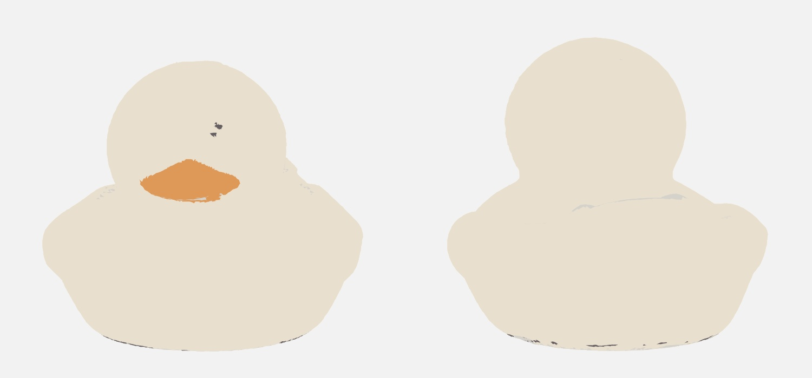
旧版：仅点云近邻颜色分区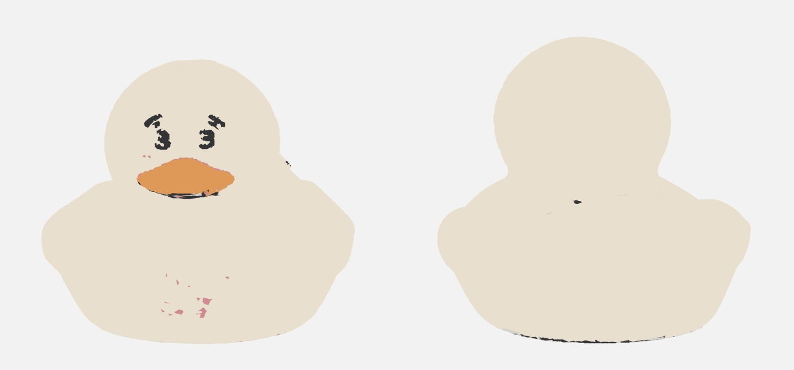
新版：照片辅助分区后的统一填色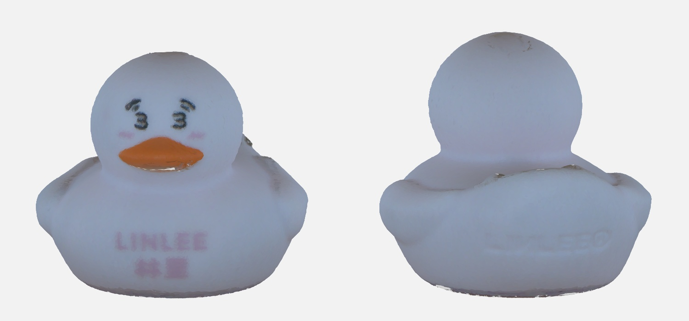
照片与点云颜色证据（保留拍摄明暗，非最终填色）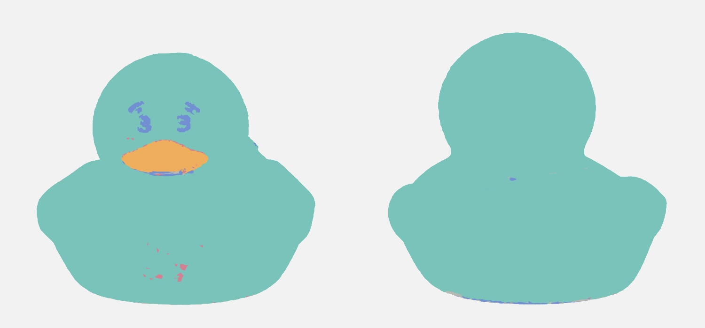
新版色区标签示意（示意色不是实物颜色）浅色色区 1 · 54,867 面橙棕色区 2 · 1,907 面深色细节 3 · 1,049 面粉红细节 4 · 159 面
进入展品，旋转查看 / 自选上色 → 处理报告
查看真实照片与模型轮廓核对
投影核对 1 投影核对 2 投影核对 3 投影核对 4 投影核对 5 投影核对 6 娃娃
使用 48 个视角；照片支持表面积 84.2%。坐标重投影核对已通过（只证明归档坐标链一致，不代表实物扫描精度）。
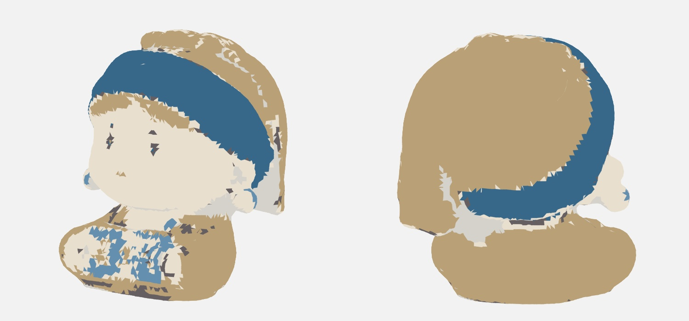
旧版：仅点云近邻颜色分区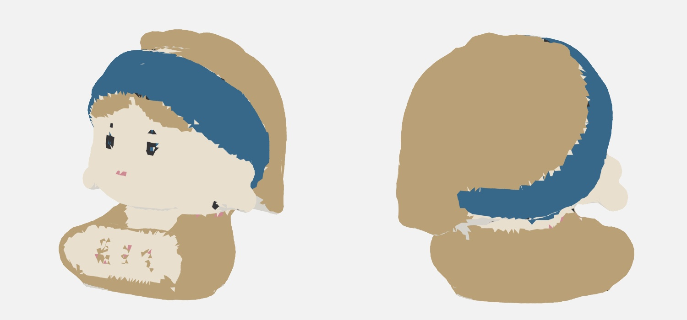
新版：照片辅助分区后的统一填色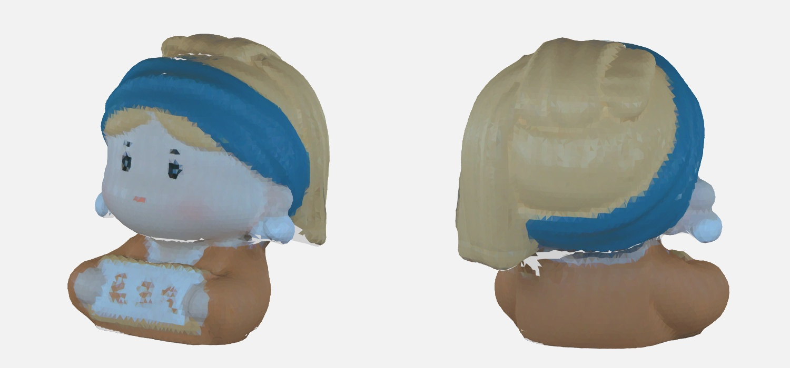
照片与点云颜色证据（保留拍摄明暗，非最终填色）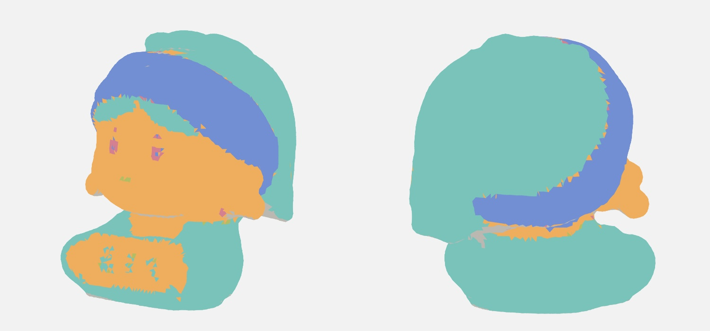
新版色区标签示意（示意色不是实物颜色）黄褐色区 1 · 13,476 面浅色色区 2 · 6,285 面深蓝色区 3 · 4,944 面深色细节 4 · 94 面粉红细节 5 · 27 面
进入展品，旋转查看 / 自选上色 → 处理报告
查看真实照片与模型轮廓核对
投影核对 1 投影核对 2 投影核对 3 投影核对 4 投影核对 5 投影核对 6 Duck_last
使用 48 个视角；照片支持表面积 83.7%。坐标重投影核对已通过（只证明归档坐标链一致，不代表实物扫描精度）。
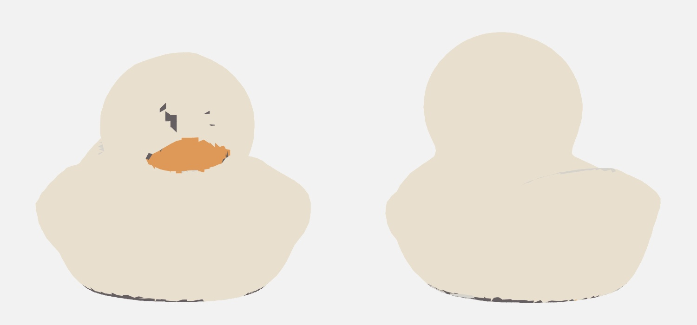
旧版：仅点云近邻颜色分区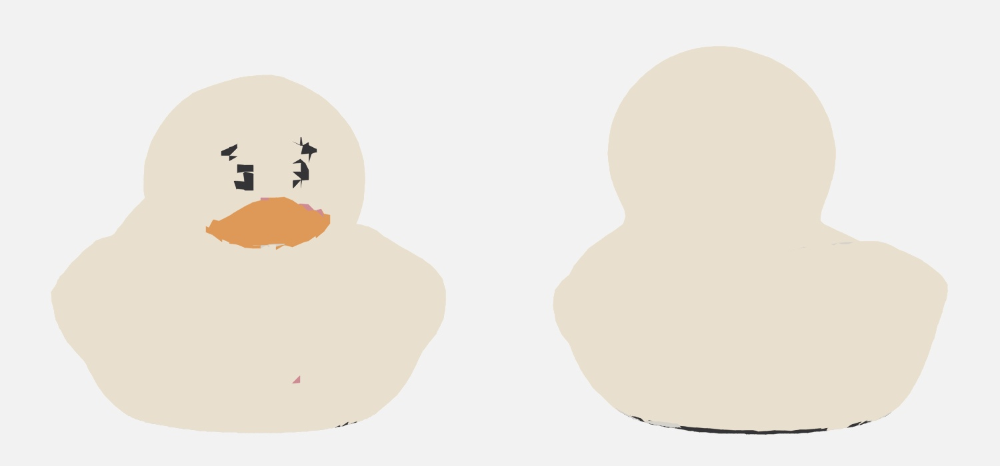
新版：照片辅助分区后的统一填色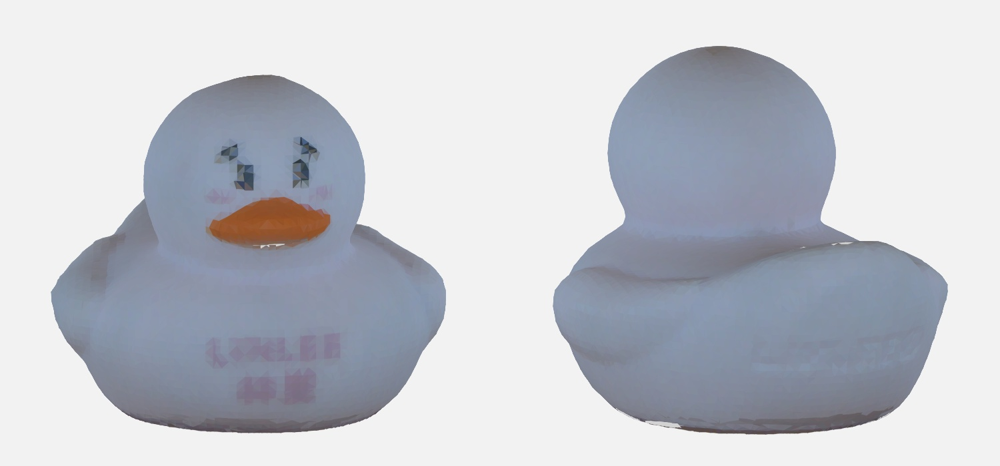
照片与点云颜色证据（保留拍摄明暗，非最终填色）新版色区标签示意（示意色不是实物颜色）浅色色区 1 · 19,449 面橙棕色区 2 · 340 面深色细节 3 · 218 面橙棕色区 4 · 92 面粉红细节 5 · 8 面
进入展品，旋转查看 / 自选上色 → 处理报告
查看真实照片与模型轮廓核对
投影核对 1 投影核对 2 投影核对 3 投影核对 4 投影核对 5 投影核对 6